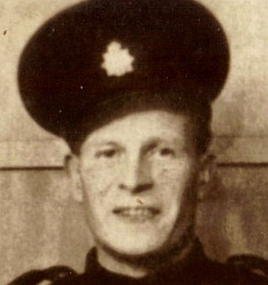
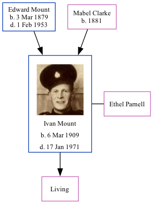

Ivan James Frederick Mount 1909 - 1971
[ Home ] | [ Calendar ] | [ Surnames Index ] | [ Family History ]A builders handyman plumbing determining and the 3rd of 4 children of Edward Mount (a stoker gas) and Mabel Clarke, Ivan Mount, the third cousin twice-removed on the mother's side of Nigel Horne, was born in Herne Bay, Kent, England on Mar 6, 19091,2,3,4, was baptized there at Christ Church on Mar 31, 1909. He married Ethel Parnell (with whom he had 1 surviving child) in Blean, Kent, England around Nov 19346.
Throughout his life, Ivan lived in several places: at 46 King Street in Herne Bay on Apr 2, 19111; at 2 Beacon Walk in Herne Bay on Sep 29, 19392; and at The Rosary, Herne Common in Herne Bay in 1971.
He died on Jan 17, 1971 in Bridge, Kent4,5.
Parents
- Edward Thomas was born on Mar 3, 1879
- Mabel Minnie was born in 1881
Citations
- 1911 Census for England & Wales - Findmypast (was age 2 and the son of the head of the household)
- 1939 Register - Findmypast (was the head of the household)
- England & Wales births 1837-2006 - Findmypast
- England & Wales deaths 1837-2007 - Findmypast
- England & Wales Government Probate Death Index 1858-2019 - Findmypast
- England & Wales Marriages 1837-2005 - Findmypast
Media
Ivan James Frederick Mount

1939 Register - TNA/R39/1740/1740H/010/10
England & Wales deaths 1837-2007 - BMD/D/1971/1/AZ/000917/085
England & Wales births 1837-2006 - BMD/B/1909/2/AZ/000425/236
England & Wales marriages 1837-2005 - BMD/M/1934/4/AZ/000902/081
Kent Baptisms - GBPRS/CANT/B/96679778
England & Wales Government Probate Death Index 1858-2019 - GBOR/GOVPROBATE/C/1971-1971/00156900
Family Tree
Generated by Ged2Site. Last updated on Jul 20, 2025